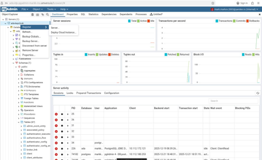

Актуальность, проблема, цель, задачи и ожидаемые результаты.
Создание программного обеспечения для управления, формирования и обработки баз данных мониторинга и реализации облачных сервисов, обеспечивающих дистанционный режим управления автономной транспортной платформой — как в центре управления, так и на самой платформе.
